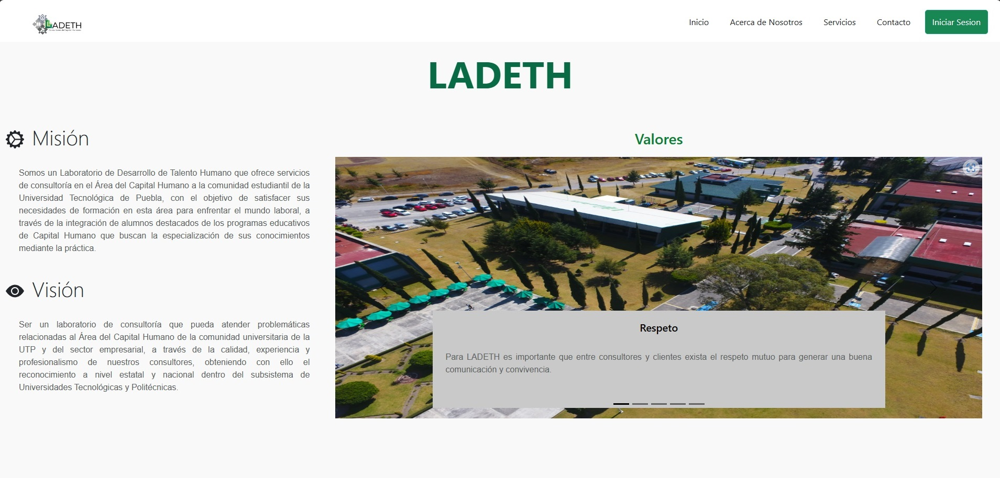

LADETH es una aplicación web que utiliza tecnologías web modernas para proporcionar una experiencia de usuario similar a la de una aplicación nativa. Se caracteriza por ser rápida, confiable y capaz de funcionar sin conexión a internet. Además, es responsiva y se puede instalar en dispositivos, lo que facilita el acceso a través de iconos en la pantalla de inicio.
